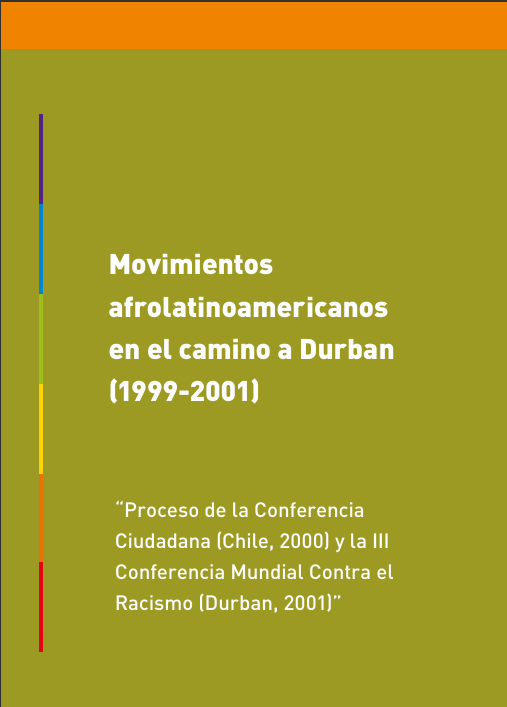
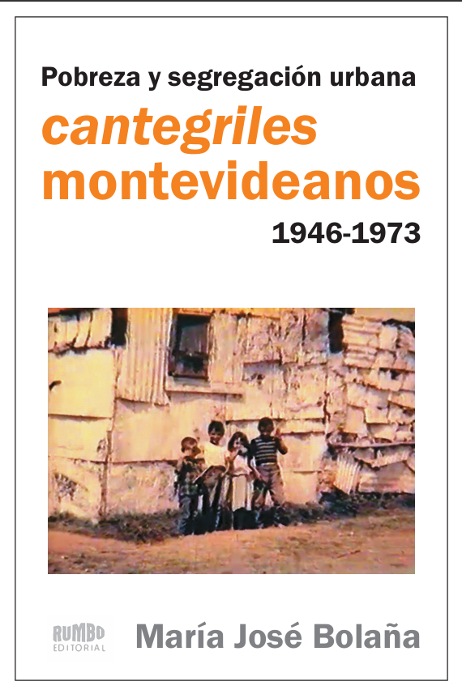
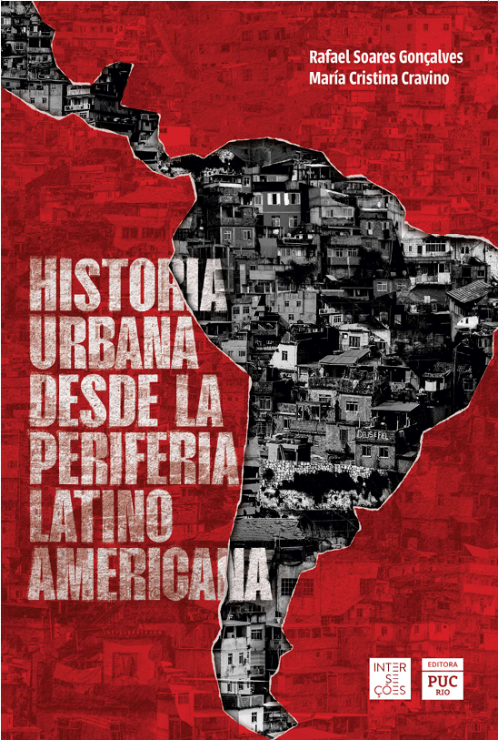
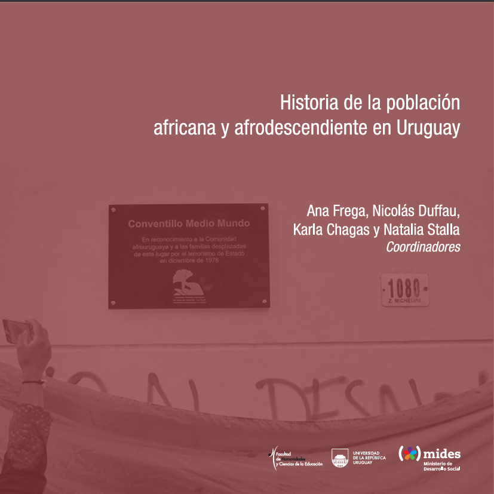

Materiales publicados y dossiers de revistas académicas

↓ Descargar PDFBolaña, María José
Mides-Uruguay
El libro reconstruye el proceso latinoamericano y caribeño de participación y movilización social hacia la Conferencia Mundial contra el Racismo realizada en Durban en el año 2001. A través de la memoria de algunos y algunas de sus participantes claves, provenientes de diversos países —Brasil, Venezuela, Honduras, Costa Rica, Perú, Uruguay— y, a partir de documentos escritos, el trabajo presenta un proceso histórico que forma parte del pasado reciente de los movimientos afrolatinoamericanos y caribeños en su lucha contra el racismo a nivel local y global.

Bolaña, María José
Editorial Rumbo, Montevideo–Uruguay
El libro se basa en la investigación histórica realizada en el marco de la maestría en Ciencias Humanas, orientación Historia rioplatense, de la Facultad de Humanidades y Ciencias de la Educación de la Universidad de la República. Se trata de una reconstrucción histórica de la ciudad informal montevideana denominada "cantegriles" entre 1946 y 1973 a través de las fuentes académicas —sociología, antropología fundamentalmente—; de las fuentes gubernamentales —discusiones parlamentarias, diagnósticos oficiales, políticas de vivienda— y de las fuentes orales, principalmente de la memoria de los pobladores de cantegriles. El abordaje historiográfico es desde la historia urbana, en este caso de Montevideo en la segunda mitad del siglo XX. Se observa el proceso de formación de los cantegriles a través de la expulsión de pobladores urbanos en un momento de crecimiento de la ciudad capital, atravesada por la falta de vivienda y por la discriminación racial. Las políticas gubernamentales para esas poblaciones fueron configurando un proceso de segregación urbana y de territorialización de la pobreza, en gran parte racializada y estigmatizada.

↓ Descargar PDFBolaña, María José
En Soares, Rafael; Cravino, María Cristina, Historia urbana desde la periferia latinoamericana.
Editora PUC-Rio, Río de Janeiro.

↓ Descargar PDFBolaña, María José
En Frega, Ana; Duffau, Nicolás; Chagas, Karla y Stalla, Natalia coordinadoras, Historia de la población africana y afrodescendiente en el Uruguay.
FHCE-Udelar – Mides, Uruguay.
María José Bolaña, Gabriela Gomes y Eulalia Portela Negrelos
Revista de la Red de Intercátedras de Historia de América Latina Contemporánea | Año 9, N° 17. Córdoba · Diciembre 2022 - mayo 2023 ·
María José Bolaña y María Alejandra Bruschi
Historia y problemas del siglo XX | Volumen 16, N.º 2 · Agosto-diciembre de 2022, Contemporánea ·
María José Álvarez, María José Bolaña, Aldo Marchesi
Revista Encuentros Uruguayos | Volumen XI, N.º 1 · Julio 2018 ·